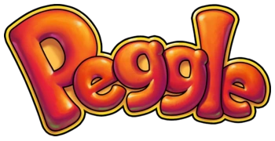

If you haven't noticed, this webpage is actually based on Peggle! Despite my large interest, I actually don't know what sparked the hyperobsession for this game in my brain. The funniest part of Peggle being my biggest interest is that I don't even really play it that much... Regardless, I am still active in the Peggle community, in the form of reverse engineering. My primary project is the W.I.P decompilation, which can be found here.